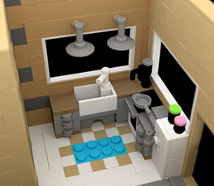

使用 AOV 识别噪波
在场景中识别噪波来源的一种有用方法是渲染到 AOV。通过查看 AOV，用户可以准确地了解需要进行调整的采样。这可以节省渲染时间，因为不会增加不必要的错误采样值。
注意：
请注意，下面使用的值是 Arnold 中用于 IPR 渲染的默认采样值。
提示：
识别噪波来源的另一种方法是将所有采样设置为 1 并增大特定采样，一次一个。
美景 AOV（摄影机 (AA) 采样数）
增加此值有助于改进图像的总体质量，但仍然存在由于其他位置的采样不足造成的噪波。建议查看特定的 AOV，因为美景 (RGBA) 中的噪波可能来自直接或间接灯光，也可能来自漫反射或镜面反射灯光。
 |
|
| 摄影机 (AA) 采样数：3（默认值） | 5 |
提示：
增加摄影机 (AA) 采样数还有助于改善运动模糊和景深，也就是说，如果您发现 Alpha 通道中出现噪波，增加摄影机 (AA) 采样数将会有所帮助。
间接 AOV（漫反射采样数）
正如在间接 AOV 中看到的，此场景中的大量噪波都是由 indirect_diffuse (GI) 噪波造成的。
| diffuse_samples：2（默认值） | diffuse_samples：10 |
镜面反射 AOV（镜面反射采样数）
请注意，使用 specular_roughness 的玻璃着色器和砖块上具有少量噪波。
| specular_samples：2（默认值） | specular_samples：3 |
透射 AOV（透射采样数）
请注意使用 transmission_roughness 时玻璃着色器上的效果。
| transmission_samples：2（默认值） | transmission_samples：5 |
SSS AOV（SSS 采样数）
少量 sss_samples 是导致此场景中出现大量噪波的原因（所有砖块均具有 sss*）。增加 *sss_ssamples 数会减少此特定场景中的大量噪波。
|  | |
| sss_samples：2（默认值） | sss_samples：6 |